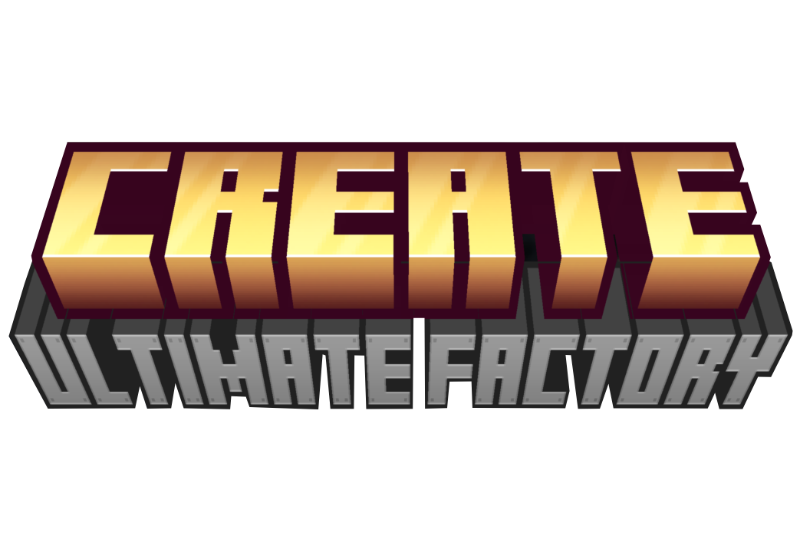

About Create: Ultimate Factory Bedrock Edition
It's a simple addon for Create that introduces new automation possibilities. Through new (reasonably) balanced recipes, this mod makes dozens of Minecraft resources renewable.
For example, Tufo is now renewable, offering players a reliable source of Ores and Experience. This also includes rare items and loot, at a much lower rate.
Ever dreamed of automating Diamond or Netherite? Now it's possible!
Changelog (1.0 version)
- Now the crushing wheel can crush multiple items at once.
- Now the Deployer plants saplings and seeds.
- Now the Chute can be broken in survival mode with a pickaxe or by hand in 1.5 seconds.
Full Recipe List (1.0 version)
🫧 Mixing
- Netherrack and Flint to Redstone.
- Coal and Blaze Powder to Gunpowder.
⚙️ Crushing Wheel
- Nether Brick to Netherite Scraps (extremely rare — 1 in 50 blocks)
- Soul Sand to Glowstone Dust.
- Soul Soil to Blaze Powder.
- Tuff to Crushed Raw Zinc and Crushed Raw Copper (50% chance each)
🧱 Compacting
- Cobblestone to 1 Tuff (chance of 1 in 9)
- Coal Blocks to 1 Diamond (chance of 1 in 9)
🔥 Encased Fan With Blue Fire
- Basalt to Netherrack.
- Obsidian to Crying Obsidian.
- Charcoal to Coal.
- Poppy to Wither Rose.
- Spider Eye to Fermented Spider Eye.
- Apple to Chorus Fruit.

CreateUF.mcaddon • Minecraft Bedrock Edition